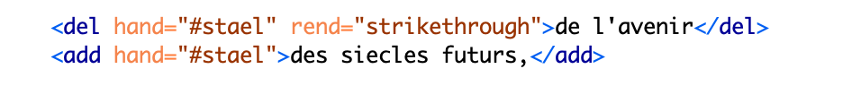
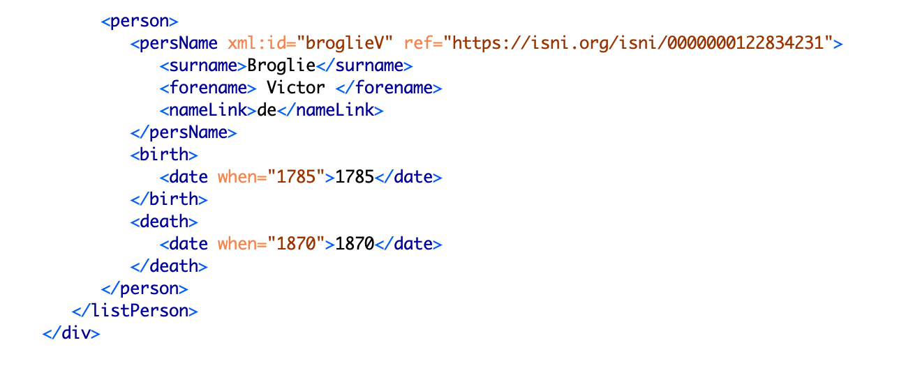
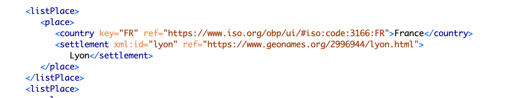
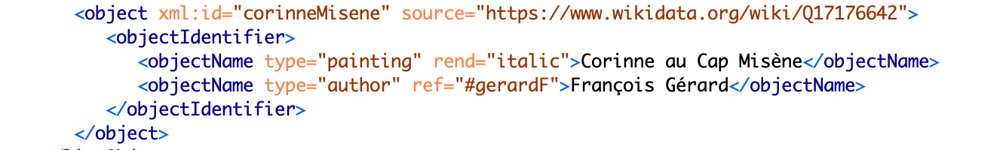

Cette édition étant un prototype, le but est d’abord de tester les différentes fonctionnalités et les différents outils pour voir s’ils répondent de manière efficace aux objectifs du projet. Les utilisateurs pourrons ainsi voir les premiers résultats de ce travail qui seront ensuite analysés pour définir les améliorations à apporter. Les données techniques que nous décrivons ici peuvent donc subir des modifications importantes en fonctions des nouveaux choix opérés.
Principes d’encodage
Assurer l’interopérabilité et la pérennisation des données sur le long terme a été
une des principales règles de cette édition qui nous ont conduit à choisir des
standards ouverts et largement utilisés par la communauté scientifique comme XML,
HTML, XSLT et les recommendations TEI.
Un autre objectif était de faire
figurer les différentes écritures relevées dans le manuscrit et de comparer celui-ci
avec la première édition sans laisser entendre que, pour assurer la plus grande
fidélité aux intentions de l’auteur, le choix éditorial s’était exprimé de quelque
manière en faveur d’un élément plutôt que d’un autre (variantes de Staël vs
interventions allographes ou bien manuscrit vs première édition). Il fallait
donc représenter ces phénomènes de manière non hiérarchisée tout en respectant les
normes d’encodage et la lisibilité.
Un autre problème a dû être affronté pour
l’affichage des contenus dans la page web : les différentes écritures devaient
être identifiables immédiatement et la navigation entre manuscrit et première
édition devait être rapide et intuitive. Tout ceci devait enfin être exprimé à
travers un code lisible et conforme aux recommandations sur l’accessibilité.
Ce que l’on voit actuellement dans le site web de l’édition représente ainsi le
difficile compromis qui a pu être atteint pour l’instant entre ces différentes
exigences.
La structuration du site se base sur la distinction source-output qui prévoit deux niveaux de granularité des données : dans le fichier XML-TEI l'annotation est beaucoup plus riche, alors que l'affichage des données dans le site prévoit une granularité inférieure. Les raisons de ce choix reposent sur l'état expérimental du site du point de vue technique : de nouvelles informations seront graduellement affichées quand le test sur le rendu final aura montré son efficacité à l'égard de la facilité d'utilisation.
Nous décrivons ci-après les pratiques de balisage en rappelant que dans la page de chaque document il est possible de télécharger le fichier XML correspondant. Le schéma de balisage est d'ailleurs disponible dans l' ODD (One Document Does-it-all).
Encodage en XML-TEI
L’encodage des textes se base sur le langage XML et les P5 Guidelines de la TEI pour sa structuration. La personnalisation du schéma reste en tout cas conforme aux recommandations TEI, et ce pour assurer le plus haut niveau d’interopérabilité. Pour des raisons analogues, nous avons utilisé des standards tels que UTF-8 pour le codage des caractères, ISO 8601 pour les dates, ISO 639-1:2002 pour les langues et des identifiants uniques pour les personnes (ISNI, VIAF ou Wikidata), les lieux (GeoNames) et les titres d’ouvrages (Wikidata).
Les fichiers XML disponibles sont les suivants :
Première édition

Balisage physique : contribuer à une meilleure connaissance des
manuscrits de Staël et de sa manière de travailler est un autre objectif de ce
projet. Des métadonnées et un encodage du texte plus riches sur cet aspect sont donc
un travail qui a été prévu dans ses phases ultérieures. Pour l’instant, ces
informations ne sont que partiellement confiées aux fac-similé introduit à l’aide de
l’attribut @facs dans <pb> qui marque le début d’une nouvelle page.
D’autres informations sur la page comme le numéro di page, de cahier (manuscrit) ou
le titre courant (première édition) sont introduites à l’aide de <fw> qui est
toujours suivi des attributs @type et @place.
L’élément <hi> enfin est
utilisé avec @rend pour mettre en évidence des mots ou des lettres graphiquement
distincts du reste comme, par exemple, une lettre en exposant.
Ce balisage ne
figure que dans le fichier XML et n’est pas affiché dans la page web.
Balisage logique : la subdivision du texte est exprimée par l’élément
<div> toujours suivi de @type pour indiquer la typologie de la section
(préface, chapitre, partie) et, le cas échéant, de @n pour indiquer le numéro
progressif correspondant. En particulier, l'attribut @type a été introduit pour
préciser sémantiquement des éléments employés pour différents objets (<div>,
<fw>, <head>, etc.) surtout dans les cas où l'on prévoyait d'appliquer
un style particulier. Pour les subdivisions entièrement rédigées par une seule main,
l’attribut @hand a été introduit dans <div>.
Balisage sémantique : le plus grand enjeu de l’encodage du texte a été
de trouver des balises indiquant clairement les différentes interventions dans le
manuscrit tout en laissant le code lisible et conforme à la TEI. Il fallait en même
temps penser au rendu final dans la page web qui devait représenter de manière
claire les différentes mains. Ce travail s’est vu compliqué par la superposition
d’autres balises relatives aux entités nommés ou à la collation entre manuscrit et
première édition : un mot, un syntagme ou un paragraphe peut, en effet, être
intéressé par plusieurs phénomènes. Nous avons donc opté pour une annotation
minimale pour pouvoir concentrer ce travail pilote sur les variantes. Pour la même
raison, le balisage des entités nommées et sur la collation ne seront affichés
qu’ultérieurement.
Pour signaler toute modification du texte de la part des
différentes mains, le choix a été porté dans un premier temps sur la méthode
“double-end-point" avec l’apparat critique placé dans le <standOff>. Cela devait
permettre de délimiter de manière précise l’endroit affecté par la modification et
de ne pas surcharger le texte avec beaucoup d’annotations. Ce dernier effet n’ayant
pu être obtenu, nous sommes en train de tester la méthode “location-referenced” et
la position “internal” de l’apparat critique, c’est-à-dire dans le texte. Voici une
substitution de Staël :

Tout type d’intervention est marquée par l’attribut @hand pour pouvoir
distinguer les différents scripteurs dont la liste a été crée dans le
<handDesc> du <teiHeader>. Le changement de copiste est indiqué comme
dans cet exemple : <handShift scribeRef="#randallF"/>. La distinction
entre @hand et @scribeRef permet aussi de distinguer les différentes foncions des
scripteurs. Il arrive, en effet, qu’une même personne est tantôt copiste à certains
endroits et tantôt auteur de modifications du texte dans d’autres.
Dans le
cas de plus d'une substitution faisant partie d'une intervention unique, nous avons
pris pour base la section "11.3.1.5 Substitutions" des "P5 TEI Guidelines" qui
considère l'encodage suivant comme ayant une foction analogue à <subst> :

L'ordre des interventions est indiqué par @varSeq, tandis que @rend restitue la
manière dont cette opération est effectuée. En particulier, l'élément <add>
emboîté dans <del> indique une addition qui a été ensuite rayée.
Il
faudra ensuite ajouter le balisage relatif à la collation entre manuscrit et
première édition et permettre une comparaison entre les deux textes. Pour rendre ce
travail plus aisé, la possibilité d’une mise en regard des deux textes pourra être
envisagée.
L'index des noms a été mis dans un fichier à part et cela dans le
but de déplacer ailleurs tout ce qui n'appartient pas au texte. Dans ce dernier, le
balisage onomastique est marqué par <rs> suivi de @ref renvoyant à l'index des
noms. Les éléments qui ont été considérés comme le minimum indispensable pour
l'identification sont les suivants :

L'identification est confiée à l'attribut @ref qui renvoie à un identifiant unique. Voici les éléments de base pour les lieux :
Dans ce cas également @ref renvoie à des identifiants uniques pour le pays et la ville. Pour l'index des ouvrages cités, une solution sémantiquement satisfaisante et en même temps conforme à la TEI n'a pas encore été trouvée. Voici une solution provisoire :
L'élément <object> ne peut pas contenir @ref. Nous avons choisi @source qui
fournit l'identifiant et, en même temps, la source de laquelle il a été tiré. Le
type d'ouvrage doit toujour être précisé avec @type dans <objectName>. Pour
introduire l'auteur, nous avons dû utiliser encore <objectName> en le
caractésant à travers l'attribut @type.
En ce qui concerne les notes, nous ne
les avons distinguées que sur la base de l'auteur de la note. Dans le manuscrit, soi
il s’agit d’une note de l’éditeur scientifique soi de Staël. Dans le texte,
l’élément <note> est donc suivi de @resp renvoyant à l’un des deux.